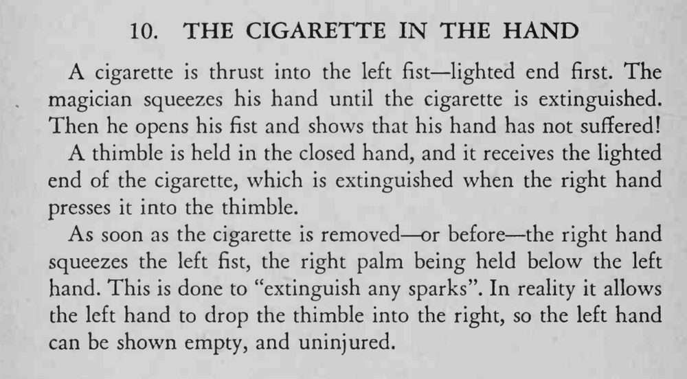

魔术师把点着的香烟塞进左拳，用力一捏把烟掐灭，摊开手却毫发无伤，烟也不见了。
拔烟或捏拳之前先让 thimble 就位；「接火星」那一下要做得像真有必要。

cigarette is thrust into the left fist lighted end first. The magician squeezes his hand until the cigarette is extinguished. Then he opens his fist and shows that his hand has not suffered! thimble is held in the closed hand, and it receives the lighted end of the cigarette, which is extinguished when the right hand presses it into the thimble. As soon as the cigarette is removed or before the right hand squeezes the left fist, the right palm being held below the left hand. This is done to "extinguish any sparks". In reality it allows the left hand to drop the thimble into the right, so the left hand can be shown empty, and uninjured.